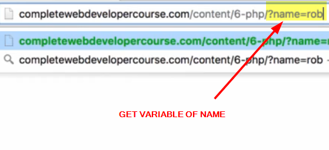

To access this get variables in our script
They are stored in a array name $_GET


To access Particular get variable in our script


Now we cannot ask user to put the get variables in URL so to solve this we'll use forms

 ---------->
---------->
PRIME NUMBER PROJECT